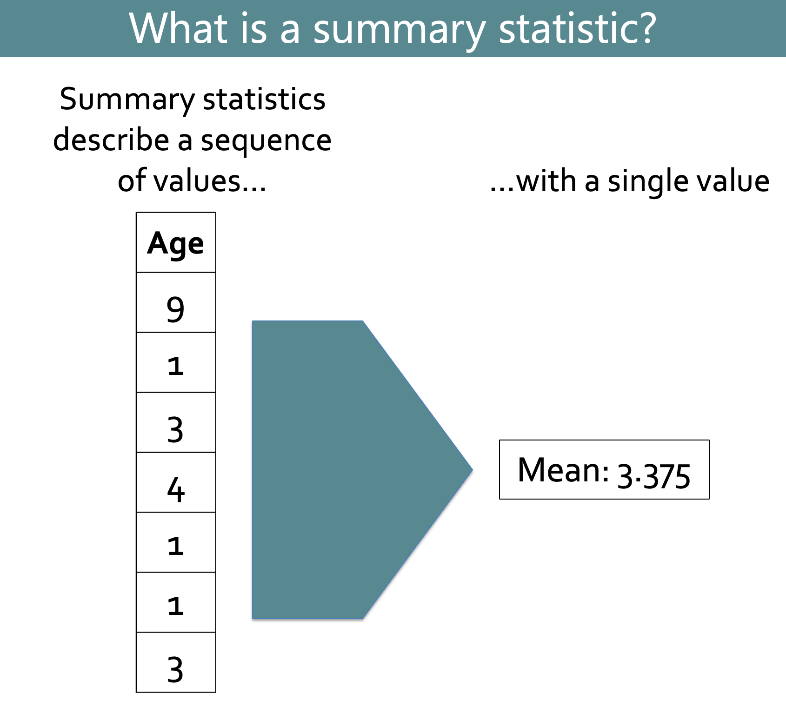
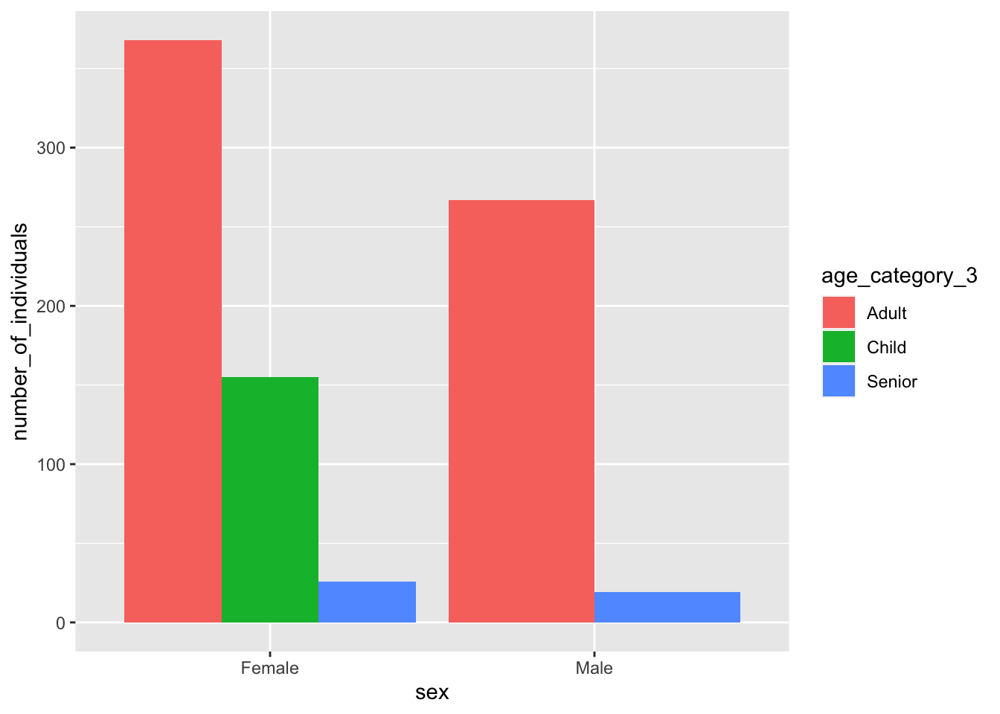
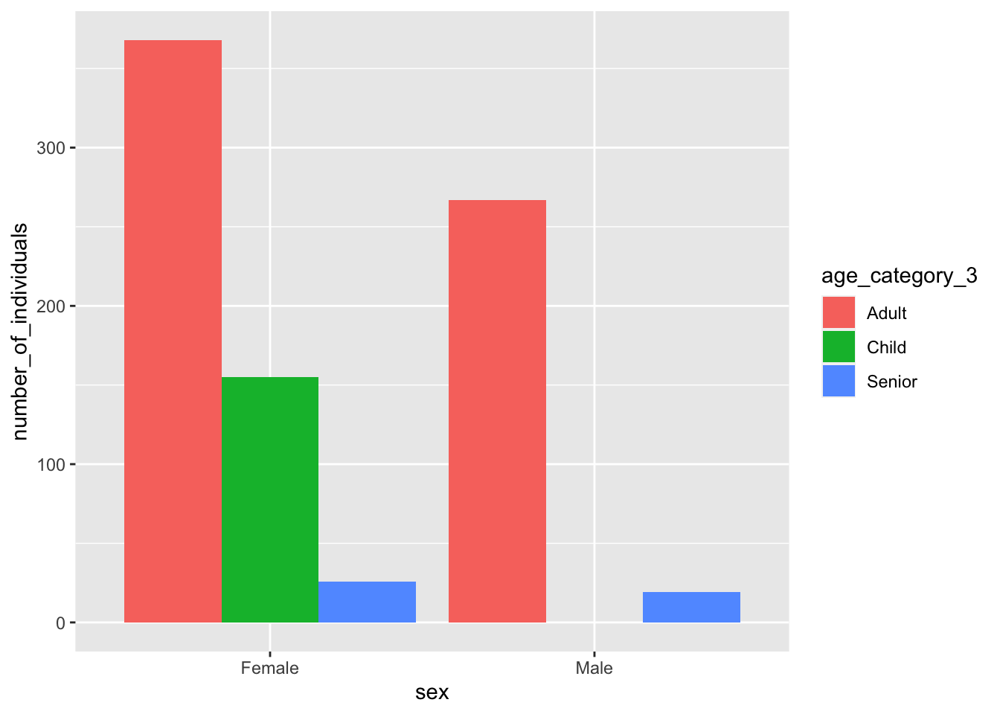
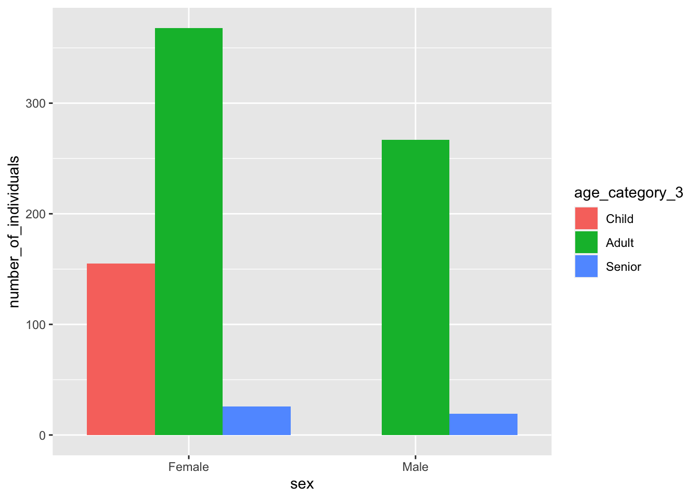
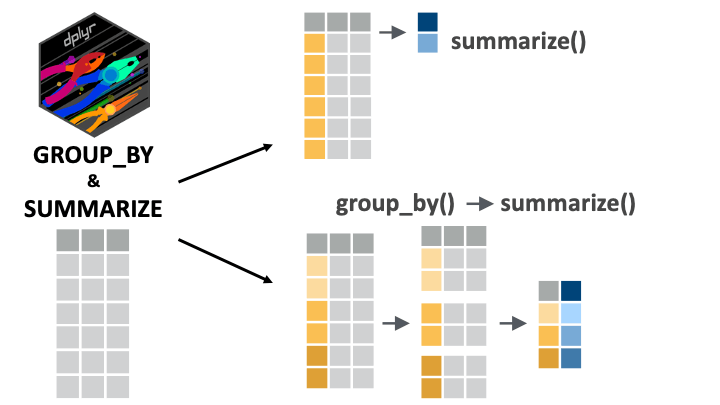

You currently know how to keep your data entries of interest, how keep relevant variables and how to modify them or create new ones.
Now, we will take your data wrangling skills one step further by understanding how to easily extract summary statistics, through the verb summarize(), such as calculating the mean of a variable.
Moreover, we will begin exploring a crucial verb, group_by(), capable of grouping your variables together to perform grouped operations on your data set.
Let’s go !
13.2 Learning objectives
You can use dplyr::summarize() to extract summary statistics from datasets.
You can use dplyr::group_by() to group data by one or more variables before performing operations on them.
You understand why and how to ungroup grouped data frames.
You can use dplyr::n() together with group_by()-summarize() to count rows per group.
You can use sum() together with group_by()-summarize() to count rows that meet a condition.
You can use dplyr::count() as a handy function to count rows per group.
13.3 The Yaounde COVID-19 dataset
In this lesson, we will again use data from the COVID-19 serological survey conducted in Yaounde, Cameroon.
See the first lesson in this chapter for more information about this dataset.
13.4 What are summary statistics?
A summary statistic is a single value (such as a mean or median) that describes a sequence of values (typically a column in your dataset).

Summary statistics can describe the center, spread or range of a variable, or the counts and positions of values within that variable. Some common summary statistics are shown in the diagram below:
Computing summary statistics is a very common operation in most data analysis workflows, so it will be important to become fluent in extracting them from your datasets. And for this task, there is no better tool than the {dplyr} function summarize()! So let’s see how to use this powerful function.
13.5 Introducing dplyr::summarize()
To get started, it is best to first consider how to get simple summary statistics without using summarize(), then we will consider why you should actually use summarize().
Imagine you were asked to find the mean age of respondents in the yao data frame. How might you do this in base R?
First, recall that the dollar sign function, $, allows you to extract a data frame column to a vector:
yao$age # extract the `age` column from `yao`
To obtain the mean, you simply pass this yao$age vector into the mean() function:
mean(yao$age)
[1] 29.01751
And that’s it! You now have a simple summary statistic. Extremely easy, right?
So why do we need summarize() to get summary statistics if the process is already so simple without it?We’ll come back to the why question soon. First let’s see how to obtain summary statistics with summarize().
Going back to the previous example, the correct syntax to get the mean age with summarize() would be:
yao %>%summarize(mean_age =mean(age))
# A tibble: 1 × 1
mean_age
<dbl>
1 29.0
The anatomy of this syntax is shown below. You simply need to input name of the new column (e.g. mean_age), the summary function (e.g. mean()), and the column to summarize (e.g. age).
Fig. Basic syntax for the summarize() function.
You can also compute multiple summary statistics in a single summarize() statement. For example, if you wanted both the mean and the median age, you could run:
yao %>%summarize(mean_age =mean(age), median_age =median(age))
Now, you should be wondering why summarize() puts the summary statistics into a data frame, with each statistic in a different column.
The main benefit of this data frame structure is to make it easy to produce grouped summaries (and creating such grouped summaries will be the primary benefit of using summarize()).
We will look at these grouped summaries in the next section. For now, attempt the practice questions below.
Practice
Use summarize() and the relevant summary functions to obtain the mean, median and standard deviation of respondent weights from the weight_kg variable of the yao data frame.
Your output should be a data frame with three columns named as shown below:
mean_weight_kg
median_weight_kg
sd_weight_kg
Q_weight_summary <- yao %>% ____________________________
Practice
Use summarize() and the relevant summary functions to obtain the minimum and maximum respondent heights from the height_cm variable of the yao data frame.
Your output should be a data frame with two columns named as shown below:
min_height_cm
max_height_cm
Q_height_summary <- yao %>% ____________________________
.CHECK_Q_height_summary().HINT_Q_height_summary()
13.6 Grouped summaries with dplyr::group_by()
As its name suggests, dplyr::group_by() lets you group a data frame by the values in a variable (e.g. male vs female sex). You can then perform operations that are split according to these groups.
What effect does group_by() have on a data frame? Let’s try to group the yao data frame by sex and observe the effect:
Hmm. Apparently nothing happened. The one thing you might notice is a new section in the header that tells you the grouped-by variable—sex—and the number of groups—2:
# A tibble: 971 × 10
👉# Groups: sex [2]👈
Apart from this header however, the data frame appears unchanged.
But watch what happens when we chain the group_by() with the summarize() call we used in the previous section:
yao %>%group_by(sex) %>%summarize(mean_age =mean(age))
# A tibble: 2 × 2
sex mean_age
<chr> <dbl>
1 Female 29.5
2 Male 28.4
You get a different summary statistic for each group! The statistics for women are in one row and those for men are in another. (From this output data frame, you can tell that, for example, the mean age for female respondents is 29.5, while that for male respondents is 28.4)
As was mentioned earlier, this kind of grouped summary is the primary reason the summarize() function is so useful!
Let’s see another example of a simple group_by() + summarize() operation.
Suppose you were asked to obtain the maximum and minimum weights for individuals in different neighborhoods in the yao data frame. First you would group_by() the neighbourhood variable, then call the max() and min() functions inside summarize():
yao %>%group_by(neighborhood) %>%summarize(max_weight =max(weight_kg), min_weight =min(weight_kg))
Great! With just a few code lines you are able to extract quite a lot of information.
Let’s see one more example for good measure. The variable n_days_miss_work tells us the number of days that respondents missed work due to COVID-like symptoms. Individuals who reported no COVID-like symptoms have an NA for this variable:
yao %>%select(n_days_miss_work)
# A tibble: 971 × 1
n_days_miss_work
<dbl>
1 0
2 NA
3 NA
4 7
5 NA
6 7
7 0
8 0
9 0
10 NA
# ℹ 961 more rows
To count the total number of work days missed for each sex group, you could try to run the sum() function on the n_days_miss_work variable:
yao %>%group_by(sex) %>%summarise(total_days_missed =sum(n_days_miss_work))
# A tibble: 2 × 2
sex total_days_missed
<chr> <dbl>
1 Female NA
2 Male NA
Hmmm. This gives you NA results because some rows in the n_days_miss_work column have NAs in them, and R cannot find the sum of values containing an NA. To solve this, the argument na.rm = TRUE is needed:
yao %>%group_by(sex) %>%summarise(total_days_missed =sum(n_days_miss_work, na.rm =TRUE))
# A tibble: 2 × 2
sex total_days_missed
<chr> <dbl>
1 Female 256
2 Male 272
The output tells us that across all women in the sample, 256 work days were missed due to COVID-like symptoms, and across all men, 272 days.
So hopefully now you see why summarize() is so powerful. In combination with group_by(), it lets you obtain highly informative grouped summaries of your datasets with very few lines of code.
Producing such summaries is a very important part of most data analysis workflows, so this skill is likely to come in handy soon!
Vocab
summarize() produces “Pivot Tables”
The summary data frames created by summarize() are often called Pivot Tables in the context of spreadsheet software like Microsoft Excel.
Practice
Use group_by() and summarize() to obtain the mean weight (kg) by smoking status in the yao data frame. Name the average weight column weight_mean
The output data frame should look like this:
is_smoker
weight_mean
Ex-smoker
Non-smoker
Smoker
NA
Q_weight_by_smoking_status <- yao %>% ________________________ ________________________
Practice
Use group_by(), summarize(), and the relevant summary functions to obtain the minimum and maximum heights for each sex in the yao data frame.
Your output should be a data frame with three columns named as shown below:
sex
min_height_cm
max_height_cm
Female
Male
Q_min_max_height_by_sex <- yao %>% ________________________ ________________________
Practice
Use group_by(), summarize(), and the sum() function to calculate the total number of bedridden days (from the n_bedridden_days variable) reported by respondents of each sex.
Your output should be a data frame with two columns named as shown below:
sex
total_bedridden_days
Female
Male
Q_sum_bedridden_days <- yao %>% ________________________ ________________________
13.7 Grouping by multiple variables (nested grouping)
It is possible to group a data frame by more than one variable. This is sometimes called “nested” grouping.
Let’s see an example. Suppose you want to know the mean age of men and women in each neighbourhood (rather than the mean age of all women), you could put both sex and neighborhood in the group_by() statement:
yao %>%group_by(sex, neighborhood) %>%summarize(mean_age =mean(age))
`summarise()` has grouped output by 'sex'. You can override using the `.groups`
argument.
# A tibble: 18 × 3
# Groups: sex [2]
sex neighborhood mean_age
<chr> <chr> <dbl>
1 Female Briqueterie 31.6
2 Female Carriere 28.2
3 Female Cité Verte 31.8
4 Female Ekoudou 29.3
5 Female Messa 30.2
6 Female Mokolo 28.0
7 Female Nkomkana 33.0
8 Female Tsinga 30.6
9 Female Tsinga Oliga 24.3
10 Male Briqueterie 33.7
11 Male Carriere 30.0
12 Male Cité Verte 27.0
13 Male Ekoudou 25.2
14 Male Messa 23.9
15 Male Mokolo 30.5
16 Male Nkomkana 29.8
17 Male Tsinga 28.8
18 Male Tsinga Oliga 24.3
From this output data frame you can tell that, for example, women from Briqueterie have a mean age of 31.6 years, while men from Briqueterie have a mean age of 33.7 years.
The order of the columns listed in group_by() is interchangeable. So if you run group_by(neighborhood, sex) instead of group_by(sex, neighborhood), you’ll get the same result, although it will be ordered differently:
yao %>%group_by(neighborhood, sex) %>%summarize(mean_age =mean(age))
`summarise()` has grouped output by 'neighborhood'. You can override using the
`.groups` argument.
# A tibble: 18 × 3
# Groups: neighborhood [9]
neighborhood sex mean_age
<chr> <chr> <dbl>
1 Briqueterie Female 31.6
2 Briqueterie Male 33.7
3 Carriere Female 28.2
4 Carriere Male 30.0
5 Cité Verte Female 31.8
6 Cité Verte Male 27.0
7 Ekoudou Female 29.3
8 Ekoudou Male 25.2
9 Messa Female 30.2
10 Messa Male 23.9
11 Mokolo Female 28.0
12 Mokolo Male 30.5
13 Nkomkana Female 33.0
14 Nkomkana Male 29.8
15 Tsinga Female 30.6
16 Tsinga Male 28.8
17 Tsinga Oliga Female 24.3
18 Tsinga Oliga Male 24.3
Now the column order is different: neighborhood is the first column, and sex is the second. And the row order is also different: rows are first ordered by neighborhood, then ordered by sex within each neighborhood.
But the actual summary statistics are the same. For example, you can again see that women from Briqueterie have a mean age of 31.6 years, while men from Briqueterie have a mean age of 33.7 years.
Practice
Using the yao data frame, group your data by gender (sex) and treatments (treatment_combinations) using group_by. Then, using summarize() and the relevant summary function, calculate the mean weight (weight_kg) for each group.
Your output should be a data frame with three columns named as shown below:
sex
treatment_combinations
mean_weight_kg
Q_weight_by_sex_treatments <- yao %>% ____________________________
Using the yao data frame, group your data by age category (age_category_3), gender (sex), and IgG results (igg_result) using group_by. Then, using summarize() and the relevant summary function, calculate the mean number of bedridden days (n_bedridden_days) for each group.
Your output should be a data frame with four columns named as shown below:
age_category_3
sex
igg_result
mean_n_bedridden_days
Q_bedridden_by_age_sex_iggresult <- yao %>% ____________________________
13.8 Ungrouping with dplyr::ungroup() (why and how)
When you group_by() more than one variable before using summarize(), the output data frame is still grouped. This persistent grouping can have unwanted downstream effects, so you will sometimes need to use dplyr::ungroup() to ungroup the data before doing further analysis.
To understand why you should ungroup() data, first consider the following example, where we group by only one variable before summarizing:
yao %>%group_by(sex) %>%summarize(mean_age =mean(age))
# A tibble: 2 × 2
sex mean_age
<chr> <dbl>
1 Female 29.5
2 Male 28.4
The data comes out like a normal data frame; it is not grouped. You can tell this because there is no information about groups in the header.
But now consider when you group by two variables before summarizing:
yao %>%group_by(sex, neighborhood) %>%summarize(mean_age =mean(age))
`summarise()` has grouped output by 'sex'. You can override using the `.groups`
argument.
# A tibble: 18 × 3
# Groups: sex [2]
sex neighborhood mean_age
<chr> <chr> <dbl>
1 Female Briqueterie 31.6
2 Female Carriere 28.2
3 Female Cité Verte 31.8
4 Female Ekoudou 29.3
5 Female Messa 30.2
6 Female Mokolo 28.0
7 Female Nkomkana 33.0
8 Female Tsinga 30.6
9 Female Tsinga Oliga 24.3
10 Male Briqueterie 33.7
11 Male Carriere 30.0
12 Male Cité Verte 27.0
13 Male Ekoudou 25.2
14 Male Messa 23.9
15 Male Mokolo 30.5
16 Male Nkomkana 29.8
17 Male Tsinga 28.8
18 Male Tsinga Oliga 24.3
Now the header tells you that the data is still grouped by the first variable in group_by(), sex:
# A tibble: 18 × 3
👉# Groups: sex [2]👈
What is the implication of this persistent grouping in the data frame? It means that the data frame may exhibit what seems like weird behavior when you try to apply some {dplyr} functions on it.
For example, if you try to select() a single variable, perhaps the mean_age variable, you should normally be able to just use select(mean_age):
yao %>%group_by(sex, neighborhood) %>%summarize(mean_age =mean(age)) %>%select(mean_age) # doesn't work as expected
`summarise()` has grouped output by 'sex'. You can override using the `.groups`
argument.
Adding missing grouping variables: `sex`
# A tibble: 18 × 2
# Groups: sex [2]
sex mean_age
<chr> <dbl>
1 Female 31.6
2 Female 28.2
3 Female 31.8
4 Female 29.3
5 Female 30.2
6 Female 28.0
7 Female 33.0
8 Female 30.6
9 Female 24.3
10 Male 33.7
11 Male 30.0
12 Male 27.0
13 Male 25.2
14 Male 23.9
15 Male 30.5
16 Male 29.8
17 Male 28.8
18 Male 24.3
But as you can see, the grouped-by variable, sex, is still selected, even though we only asked for mean_age in the select() statement.
This is one of the many examples of unique behaviors of grouped data frames. Other dplyr verbs like filter(), mutate() and arrange() also act in special ways on grouped data. We will address this in detail in a future lesson.
So you now know why you should ungroup data when you no longer need it grouped. Let’s now see how to ungroup data. It’s quite simple: just add the ungroup() function to your pipe chain. For example:
yao %>%group_by(sex, neighborhood) %>%summarize(mean_age =mean(age)) %>%ungroup()
`summarise()` has grouped output by 'sex'. You can override using the `.groups`
argument.
# A tibble: 18 × 3
sex neighborhood mean_age
<chr> <chr> <dbl>
1 Female Briqueterie 31.6
2 Female Carriere 28.2
3 Female Cité Verte 31.8
4 Female Ekoudou 29.3
5 Female Messa 30.2
6 Female Mokolo 28.0
7 Female Nkomkana 33.0
8 Female Tsinga 30.6
9 Female Tsinga Oliga 24.3
10 Male Briqueterie 33.7
11 Male Carriere 30.0
12 Male Cité Verte 27.0
13 Male Ekoudou 25.2
14 Male Messa 23.9
15 Male Mokolo 30.5
16 Male Nkomkana 29.8
17 Male Tsinga 28.8
18 Male Tsinga Oliga 24.3
Now that the data frame is ungrouped, it will behave like a normal data frame again. For example, you can select() any column(s) you want; you won’t have some unwanted columns tagging along:
yao %>%group_by(sex, neighborhood) %>%summarize(mean_age =mean(age)) %>%ungroup() %>%select(mean_age)
`summarise()` has grouped output by 'sex'. You can override using the `.groups`
argument.
You can do a lot of data science by just counting and occasionally dividing. - Hadley Wickham, Chief Scientist at RStudio
A common data summarization task is counting how many observations (rows) there are for each group. You can achieve this with the special n() function from {dplyr}, which is specifically designed to be used within summarise().
For example, if you want to count how many individuals are in each neighborhood group, you would run:
yao %>%group_by(neighborhood) %>%summarize(count =n())
Group your yao data frame by the respondents’ occupation (occupation) and use summarize() to create columns that show:
how many individuals there are with each occupation (think of the n() function)
the mean number of work days missed (n_days_miss_work) by those in that occupation
Your output should be a data frame with three columns named as shown below:
occupation
count
mean_n_days_miss_work
Q_occupation_summary <- yao %>% ____________________________
13.9.1 Counting rows that meet a condition
Rather than counting all rows as above, it is sometimes more useful to count just the rows that meet specific conditions. This can be done easily by placing the required conditions within the sum() function.
For example, to count the number of people under 18 in each neighborhood, you place the condition age < 18 inside sum():
yao %>%group_by(neighborhood) %>%summarize(count_under_18 =sum(age <18))
Similarly, to count the number of people with doctorate degrees in each neighborhood, you place the condition highest_education == "Doctorate" inside sum():
yao %>%group_by(neighborhood) %>%summarize(count_with_doctorates =sum(highest_education =="Doctorate"))
Why are you able to use sum() which is meant to add numbers, on a condition like highest_education == "Doctorate"?
Using sum() on a condition works because the condition evaluates to the Boolean values TRUE and FALSE. And these Boolean values are treated as numbers (where TRUE equals 1 and FALSE equals 0), and numbers can, of course, be summed.
The code below demonstrates what is going on under the hood in a step-by-step way. Run through it and see if you can follow.
demo_of_condition_sums <- yao %>%select(highest_education) %>%mutate(with_doctorate = highest_education =="Doctorate") %>%mutate(numeric_with_doctorate =as.numeric(with_doctorate))demo_of_condition_sums
For a final illustration of counting with conditions, consider the treatment_combinations variable, which lists the treatments received by people with COVID-like symptoms. People who received no treatments have an NA value:
The count() verb gives you key information about your dataset in a very quick manner. Let’s look at our IgG results stratified by age category and sex in one line of code.
Using the yao data frame, count the different combinations of gender (sex), age categories (age_category_3) and IgG results (igg_result).
Your output should be a data frame with four columns named as shown below:
sex
age_category_3
igg_result
n
Q_count_iggresults_stratified_by_sex_agecategories <- yao %>% ____________________________
Using the yao data frame, count the different combinations of age categories (age_category_3) and number of bedridden days (n_bedridden_days).
Your output should be a data frame with three columns named as shown below:
age_category_3
n_bedridden_days
n
Q_count_bedridden_age_categories <- yao %>% ____________________________
The downside of count() is that it can only give you a single summary statistic in the data frame. When you use summarize() and n() you can include multiple summary statistics. For example:
yao %>%group_by(sex, neighborhood) %>%summarize(count =n(), median_age =median(age))
`summarise()` has grouped output by 'sex'. You can override using the `.groups`
argument.
# A tibble: 18 × 4
# Groups: sex [2]
sex neighborhood count median_age
<chr> <chr> <int> <dbl>
1 Female Briqueterie 61 28
2 Female Carriere 140 25.5
3 Female Cité Verte 44 28
4 Female Ekoudou 110 26.5
5 Female Messa 26 27.5
6 Female Mokolo 53 23
7 Female Nkomkana 43 28
8 Female Tsinga 42 29
9 Female Tsinga Oliga 30 23.5
10 Male Briqueterie 45 28
11 Male Carriere 96 27
12 Male Cité Verte 28 22.5
13 Male Ekoudou 80 21.5
14 Male Messa 22 24.5
15 Male Mokolo 43 32
16 Male Nkomkana 32 27
17 Male Tsinga 39 27
18 Male Tsinga Oliga 37 21
But count() can only yield counts:
yao %>%group_by(sex, neighborhood) %>%count()
# A tibble: 18 × 3
# Groups: sex, neighborhood [18]
sex neighborhood n
<chr> <chr> <int>
1 Female Briqueterie 61
2 Female Carriere 140
3 Female Cité Verte 44
4 Female Ekoudou 110
5 Female Messa 26
6 Female Mokolo 53
7 Female Nkomkana 43
8 Female Tsinga 42
9 Female Tsinga Oliga 30
10 Male Briqueterie 45
11 Male Carriere 96
12 Male Cité Verte 28
13 Male Ekoudou 80
14 Male Messa 22
15 Male Mokolo 43
16 Male Nkomkana 32
17 Male Tsinga 39
18 Male Tsinga Oliga 37
13.10 Including missing combinations in summaries
When you use group_by() and summarize() on multiple variables, you obtain a summary statistic for every unique combination of the grouped variables. For instance, consider the code and output below, which counts the number of individuals in each age-sex group:
yao %>%group_by(sex, age_category_3) %>%summarise(number_of_individuals =n())
`summarise()` has grouped output by 'sex'. You can override using the `.groups`
argument.
# A tibble: 6 × 3
# Groups: sex [2]
sex age_category_3 number_of_individuals
<chr> <chr> <int>
1 Female Adult 368
2 Female Child 155
3 Female Senior 26
4 Male Adult 267
5 Male Child 136
6 Male Senior 19
In the output data frame, there is one row for each combination of sex and age group (Female—Adult, Female—Child and so on).
But what happens if one of these combinations is not present in the data?
Let’s create an artificial example to observe this. With the code below, we artificially drop all male children from the yao data frame:
yao_no_male_children <- yao %>%filter(!(sex =="Male"& age_category_3 =="Child"))
Now if you run the same group_by() and summarize() call on yao_no_male_children, you’ll notice the missing combination:
`summarise()` has grouped output by 'sex'. You can override using the `.groups`
argument.
# A tibble: 5 × 3
# Groups: sex [2]
sex age_category_3 number_of_individuals
<chr> <chr> <int>
1 Female Adult 368
2 Female Child 155
3 Female Senior 26
4 Male Adult 267
5 Male Senior 19
Indeed, there is no row for male children.
But sometimes it is useful to include such missing combinations in the output data frame, with an NA or 0 value for the summary statistic.
To do this, you can run the following code instead:
yao_no_male_children %>%# convert variables to factorsmutate(sex =as.factor(sex), age_category_3 =as.factor(age_category_3)) %>%# Note the the .drop = FALSE argumentgroup_by(sex, age_category_3, .drop =FALSE) %>%summarise(number_of_individuals =n())
`summarise()` has grouped output by 'sex'. You can override using the `.groups`
argument.
# A tibble: 6 × 3
# Groups: sex [2]
sex age_category_3 number_of_individuals
<fct> <fct> <int>
1 Female Adult 368
2 Female Child 155
3 Female Senior 26
4 Male Adult 267
5 Male Child 0
6 Male Senior 19
What does the code do?
First it converts the grouping variables to factors with as.factor() (inside a mutate() call)
Then it uses the argument .drop = FALSE in the group_by() function to avoid dropping the missing combinations.
Now you have a clear 0 count for the number of male children!
Let’s see one more example, this time without artificially modifying our data.
The code below calculates the average age by sex and education group:
yao %>%group_by(sex, highest_education) %>%summarise(mean_age =mean(age))
`summarise()` has grouped output by 'sex'. You can override using the `.groups`
argument.
# A tibble: 13 × 3
# Groups: sex [2]
sex highest_education mean_age
<chr> <chr> <dbl>
1 Female Doctorate 28
2 Female No formal instruction 45.6
3 Female No response 35
4 Female Primary 26.8
5 Female Secondary 28.8
6 Female University 31.5
7 Male Doctorate 42.2
8 Male No formal instruction 37.9
9 Male No response 22
10 Male Other 5.5
11 Male Primary 22.9
12 Male Secondary 29.4
13 Male University 31.9
Notice that in the output data frame, there are 7 rows for men but only 6 rows for women, because no woman answered “Other” to the question on highest education level.
If you nonetheless want to include the “Female—Other” row in the output data frame, you would run:
`summarise()` has grouped output by 'sex'. You can override using the `.groups`
argument.
# A tibble: 14 × 3
# Groups: sex [2]
sex highest_education mean_age
<fct> <fct> <dbl>
1 Female Doctorate 28
2 Female No formal instruction 45.6
3 Female No response 35
4 Female Other NaN
5 Female Primary 26.8
6 Female Secondary 28.8
7 Female University 31.5
8 Male Doctorate 42.2
9 Male No formal instruction 37.9
10 Male No response 22
11 Male Other 5.5
12 Male Primary 22.9
13 Male Secondary 29.4
14 Male University 31.9
Practice
Using the yao data frame, let’s calculate the median age when grouping by neighborhood, age_category, and gender
Note, we want all possible combinations of these three variables (not just those present in our data).
Pay attention to two data wrangling imperatives!
convert your grouping variables to factors beforehand using mutate()
calculate your statistic, the median, while removing any NA values.
Your output should be a data frame with four columns named as shown below:
neighborhood
age_category_3
sex
median_age
Q_median_age_by_neighborhood_agecategory_sex <- yao %>% ____________________________
Side Note
Why include missing combinations?
Above, we mentioned that including missing combinations is often useful in the data analysis workflow. Let’s see one use case: plotting with {ggplot}. If you have not yet learned {ggplot}, that is okay, just focus on the plot outputs.
To make a dodged bar chart with the age-sex counts of yao_no_male_children, you could run:
yao_no_male_children %>%group_by(sex, age_category_3) %>%summarise(number_of_individuals =n()) %>%ungroup() %>%# pass the output to ggplotggplot() +geom_col(aes(x = sex, y = number_of_individuals, fill = age_category_3), position ="dodge")
`summarise()` has grouped output by 'sex'. You can override using the `.groups`
argument.

Not very elegant! Ideally there should be an empty space indicating 0 for the number of male children.
If you instead implement the procedure to include missing combinations, you get a more natural dodged bar plot, with an empty space for male children:
yao_no_male_children %>%mutate(sex =as.factor(sex), age_category_3 =as.factor(age_category_3)) %>%group_by(sex, age_category_3, .drop =FALSE) %>%summarise(number_of_individuals =n()) %>%ungroup() %>%# pass the output to ggplotggplot() +geom_col(aes(x = sex, y = number_of_individuals, fill = age_category_3), position ="dodge")
`summarise()` has grouped output by 'sex'. You can override using the `.groups`
argument.

Much better!
By the way, this output can be improved slightly by setting the factor levels for age to their proper ascending order: first “Child”, then “Adult” then “Senior”:
yao_no_male_children %>%mutate(sex =as.factor(sex), age_category_3 =factor(age_category_3, levels =c("Child", "Adult", "Senior"))) %>%group_by(sex, age_category_3, .drop =FALSE) %>%summarise(number_of_individuals =n()) %>%ungroup() %>%# pass the output to ggplotggplot() +geom_col(aes(x = sex, y = number_of_individuals, fill = age_category_3), position ="dodge")
`summarise()` has grouped output by 'sex'. You can override using the `.groups`
argument.

13.11 Wrap up
You have now seen how to obtain quick summary statistics from your data, either for exploratory data or for further data presentation or plotting.
Additionally, you have discovered one of the marvels of {dplyr}, the possibility to group your data using group_by().
group_by() combined with summarize() is a one of the most common grouping manipulations.

Fig: summarize() and its use combined with group_by().
However, you can also combine group_by() with many of the other {dplyr} verbs: this is what we will cover in our next lesson. See you soon !